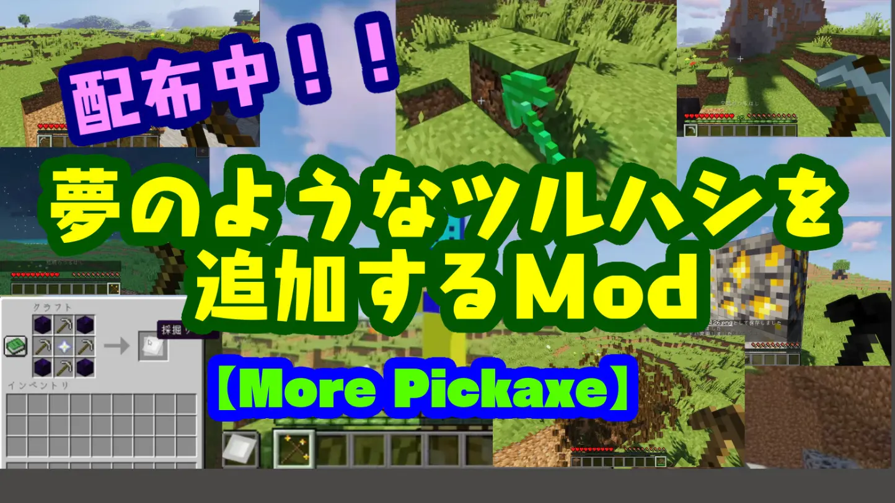

ツルハシの要素を追加できるModを作ってみた!!
「ツルハシ」の要素が追加されるModを作ってみました！
ツルハシModで多数の個性的なツルハシが作れます♪
動画でも紹介しているので、ぜひ見てください！
▶️ 紹介動画はこちら
🔧 導入方法（Forge 1.20.1）
Forgeをまだ導入していない方は、こちらからどうぞ。
インストーラーをダウンロードしてForgeを導入したあと、以下のパスにModファイルを入れてください：
C:\Users\ユーザー名\AppData\Roaming\.minecraft\mods